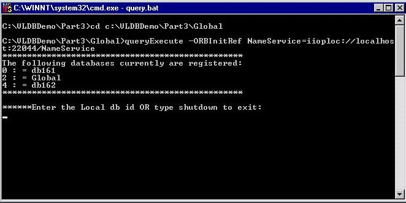

Next, we start running the query application on the global site to allow semantic queries to selected local sites to be posed. The initial query interface is shown in the screenshot below.
Home
Previous
Next
